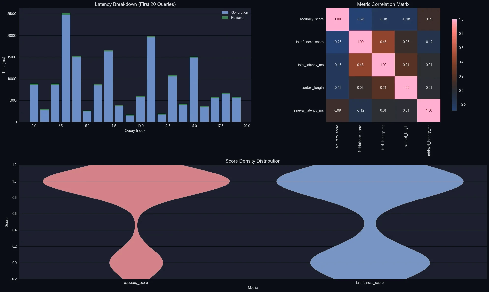
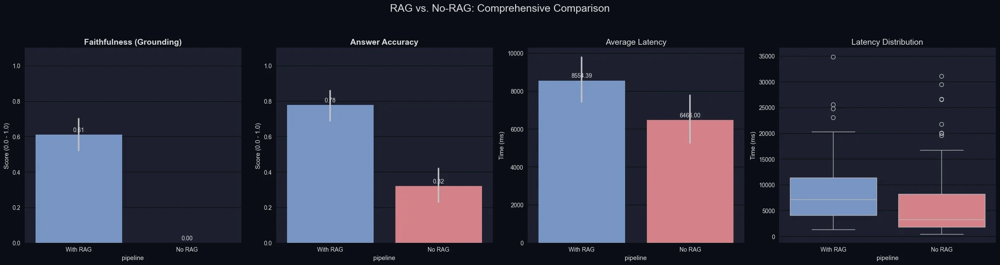

Multi-strategy RAG pipeline
My MSc dissertation: four ways to retrieve, one small model to answer, and an evaluation I can defend.
- Role
- Sole author
- Recognition
- Best Project, Middlesex
- Code
- GitHub

The question
A 3 billion parameter model answers from memory with full confidence, right or wrong. Retrieval should help, but by how much, at what cost in latency, and which retrieval? Dense vectors, keyword search, a fusion of the two, or a reranker on top?
I wanted numbers I could stand behind, so the evaluation got as much design as the pipeline.
What I built
- Natural Questions and HotpotQA indexed in Weaviate with named vectors.
- Four strategies behind one interface: semantic search, BM25, hybrid with a tunable alpha, and semantic search reranked by Cohere.
- Llama 3.2 3B through OpenRouter as the generator, with a no-retrieval baseline using the same model.
- Every call traced with OpenTelemetry into Arize Phoenix, so latency and judgements can be inspected per span.
- An LLM judge scoring accuracy against the ground truth, plus relevance and faithfulness against the retrieved context.
What the numbers say
100 Natural Questions queries, graded by GPT-5-mini, a far stronger model than the one answering. Both arms share the generator, the judge and the questions, so the gap belongs to retrieval.

Read a trace
Three real runs from the committed results file. Pick one to see where the time went, what came back from the index, and what the model said.
Trace viewer
What went wrong, and what I did
The model narrated its prompt. Answers opened with “Based on the additional information provided, I will update my knowledge”, as in the traces above. The prompt framed the context as 2024 news to add to its knowledge, and a 3B model took that literally. I rewrote it to be directive and source neutral.
Faithfulness was the wrong question for this corpus. The NQ index stores short answers like “France”, not passages, so there is nothing to ground against. Low faithfulness here measures the corpus, not hallucination.
One comparison graded itself. The four-strategy benchmark used the 3B generator as its own judge, on 20 queries. Its ranking below is indicative only, and I say so in the repository.
Four strategies, with that caveat
| Strategy | Latency | Relevance | Faithfulness |
|---|---|---|---|
| BM25 | 1.72 s | 0.40 | 0.00 |
| Semantic | 2.76 s | 0.35 | 0.15 |
| Hybrid | 2.16 s | 0.25 | 0.00 |
| Semantic with Cohere rerank | 2.01 s | 0.25 | 0.00 |

What I would do next
- Re-run the four-strategy benchmark under the GPT-5-mini judge, on a larger sample. It is cheap and would confirm or overturn the ranking.
- Point faithfulness at HotpotQA’s supporting sentences, which the ingestion code already extracts.
- Regenerate the committed results with the fixed prompt, to measure what the fix was worth.